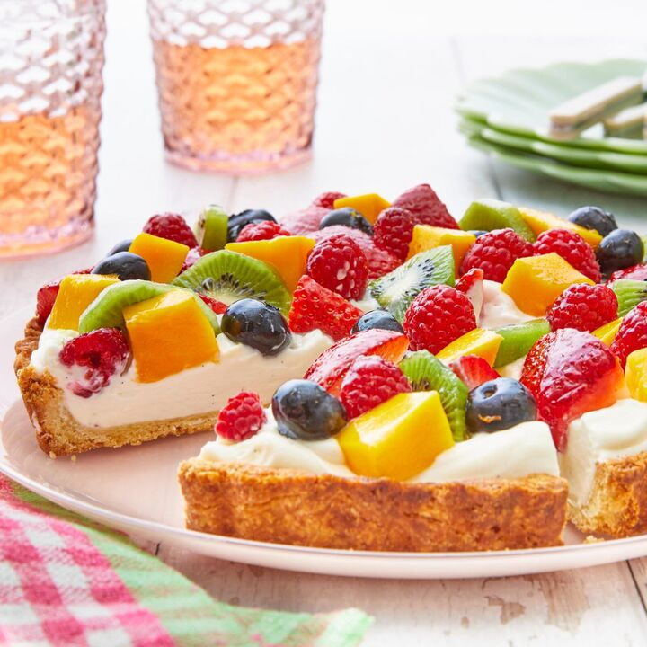

Fruit tart

Ingredients:
For the Crust
- 1 1/3 c. all-purpose flour
- 1/4 c. granulated sugar
- 1/2 tsp. kosher salt
- 10 tbsp. butter, melted
- 1/2 tsp. almond extract
For the Filling
- 1/2 c. heavy cream
- 1 (8-oz.) container mascarpone cheese
- 4 oz. cream cheese, softened
- 1/2 c. powdered sugar
- Juice of 1/2 lemon
- 1/2 tsp. almond extract
For the Topping
- 1 c. halved strawberries
- 1 c. blackberries
- 1 c. raspberries
- 2 mandarins
- 1/3 c. blueberries
- 1/4 c. apricot preserves
Instructions:
- Make crust: Preheat oven to 350°. In a large bowl, whisk together flour, sugar, and salt. Add melted butter and almond extract and stir until dough forms. Press mixture into a 10" tart pan with a removable bottom, pressing dough all the way up the sides and until dough is smooth.
- Prick all over with a fork and bake until golden, 20 to 25 minutes. Let cool completely.
- Make filling: In a medium bowl using a hand mixer beat heavy cream until stiff peaks form. In a large bowl, beat mascarpone and cream cheese until smooth. Add powdered sugar, lemon juice, and almond extract and beat until no lumps remain. Fold in whipped cream.
- Spread filling over cooled crust and arrange fresh fruit on top.
- In a small microwave-safe bowl, heat together preserves and 2 teaspoons water until warmed, 30 seconds. Brush over tart and refrigerate until well chilled, 2 hours.